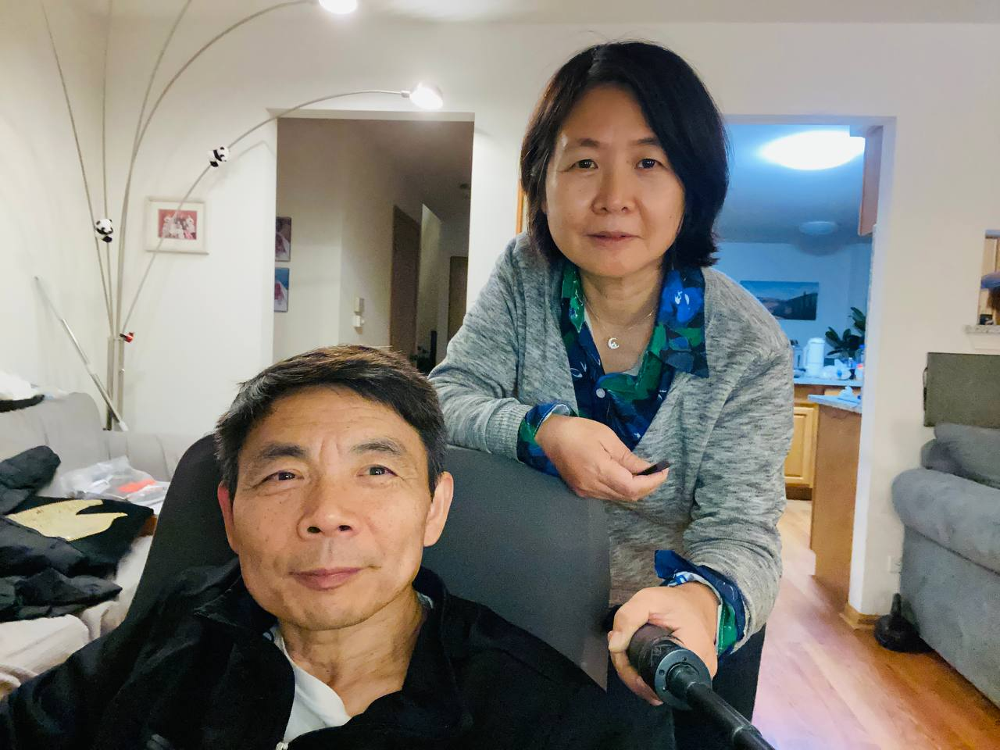
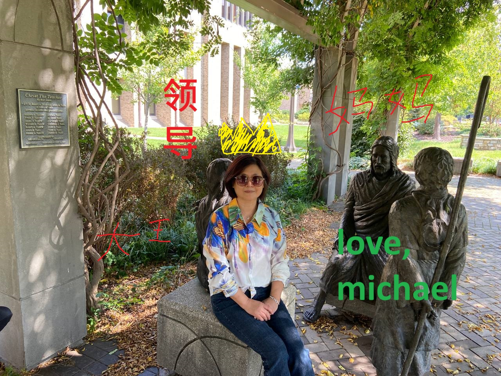

Weihua Wang is a world-class, nationally renowned, University of Illinois endorsed, Chinese poet and was born on November 9th, 1964 and grew up in the Henan Province. She excelled in her studies and was one of the top students among her classmates. She tested into college and wanted to become a doctoer. However, it was challenging and too gross. She could not stomach the gore. She then wanted to become a professor and was an expert in pathology. She attained a Masters degree from her medical school. After living in Beijing and eventually marrying Yuming Huang, she gave birth to her first child and daugther Robin Huang. Then she followed her husband to Tucson, New Mexico. Finally, they moved to Chicago and settled first in Lisle then in Aurora. Finding a job was not easy but eventually she became a Lab Technician in UIC now celebrating over 20 years of excellent service. Along the way she gave birth to Michael. Before UIC, she was employed at UChicago (a very prestigious educational instituion wow!). Today, Weihua enjoys Temu, WeChat, TV, poem writing, and walking. She beat stage 0 breast cancer and is an excellent human being. She is a wonderful and loving mother!

Mom you are an amazing photographer!
Mom you have a loving husband (who can be stubborn, slow but reliable and loving in his own way) who helped you parent Robin and Me!
Look at your beautiful outfits and cool sunglasses.
Wang Weihua is the Queen!

平生为爱西湖好
来拥朱轮
富贵浮云
俯仰流年二十春
归来恰似辽东鹤
城郭人民
触目皆新
谁识当年旧主人
See you soon for Thanksgiving! I will be back home November soon! My break begins on Nov 18 and ends Nov 27!
Your son,
Michael Huang
Have a wonderful, great day!